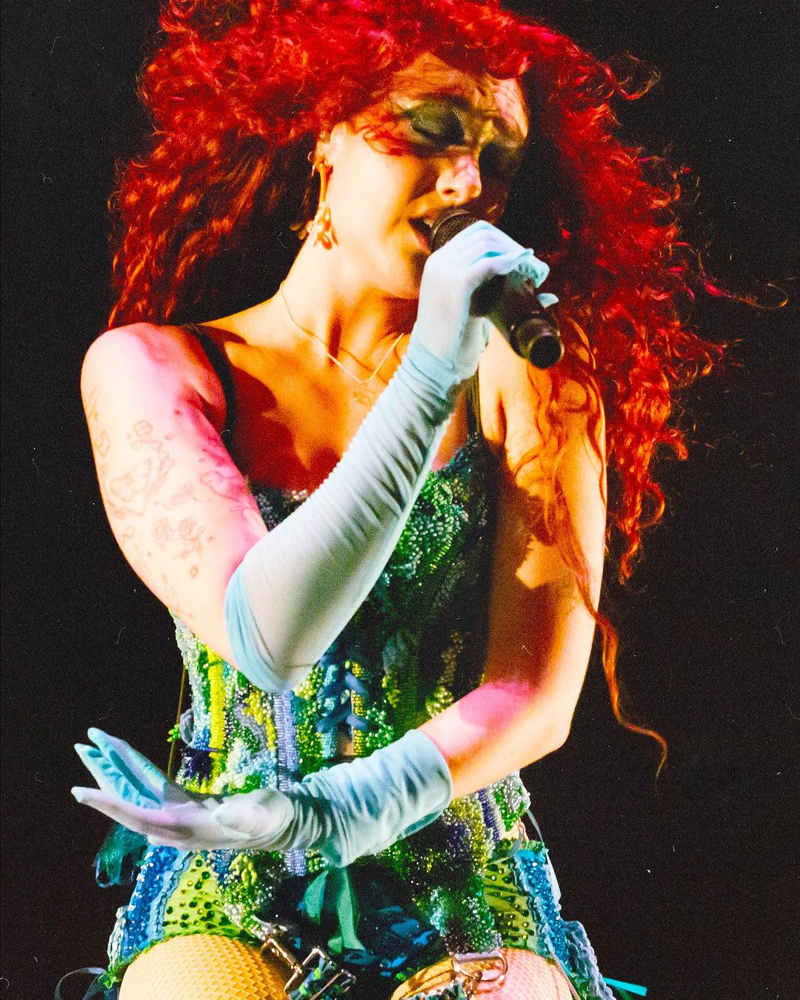
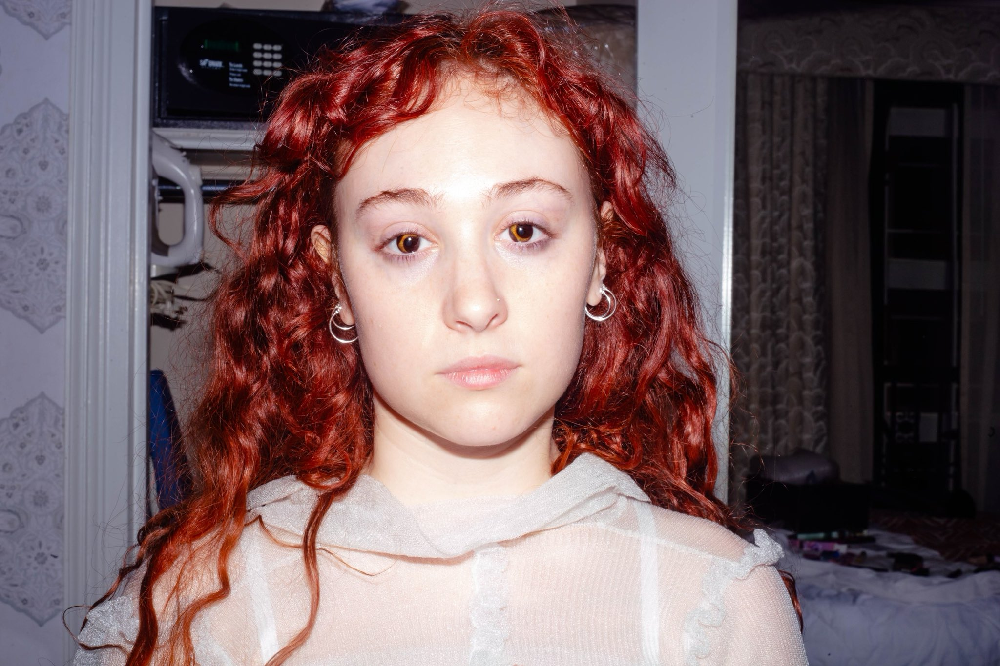

CHAPPELL ROAN

Kayleigh Rose Amstutz (born February 19, 1998), known professionally as Chappell Roan, is an American singer and songwriter. Working with collaborator Dan Nigro, the majority of her music is inspired by 1980s synth-pop and early 2000s pop hits. Her aesthetic is heavily influenced by drag queens, and her music and performing style have been described as "campy".
When she was 17 years old, Roan uploaded an original song, "Die Young", to YouTube. She was signed to Atlantic Records shortly thereafter. In 2017, she released her debut EP, School Nights. Her 2020 single "Pink Pony Club", a stylistic departure from her early releases, helped Roan's initial rise to prominence. She was dropped from Atlantic that same year.
Following a short break, she released a series of songs independently in 2022. Her debut album, The Rise and Fall of a Midwest Princess, was released through Island Records in 2023. The album was included in several best-albums-of-2023 year-end lists. Although not an immediate commercial success, Midwest Princess garnered a cult following in the months after its release and became regarded as a "sleeper hit" by early 2024. The album's commercial breakthrough was largely influenced by Roan's supporting act on Olivia Rodrigo's Guts World Tour, her performances at music festivals like Coachella and Governors Ball, and the success of her follow-up single, "Good Luck, Babe!". By June 2024, Midwest Princess had climbed the charts, peaking within the top ten on the US Billboard 200 as well as in Australia, Canada, Ireland, New Zealand, and the UK. Subsequently, several of its singles entered various charts for the first time since their release.

Chappell currently lives in Los Angeles, California. While she was raised Christian, she has said that she no longer identifies with the church and that her current relationship with religion is "evolving". Chappell has dated men in the past; however, she stated that she no longer dates men and identifies as a lesbian.
Chappell was diagnosed with bipolar II disorder when she was 22 years old, a disorder which contributed to her difficult childhood. She has described therapy and medication as being helpful for her. She said that she came to her "tacky pop star" appearance after discussing her inner child with her therapist.
While it began as a stage name, Chappell has called Chappell Roan her drag persona and likened herself to Hannah Montana. She describes Chappell Roan as more open and confident, especially regarding sex, than her real self.
Roan has a lower-back tattoo that says "princess", which helped inspire the name of her debut studio album.
Kayleigh Rose Amstutz (born February 19, 1998), known professionally as Chappell Roan, is an American singer and songwriter. Working with collaborator Dan Nigro, the majority of her music is inspired by 1980s synth-pop and early 2000s pop hits. Her aesthetic is heavily influenced by drag queens, and her music and performing style have been described as "campy".
When she was 17 years old, Roan uploaded an original song, "Die Young", to YouTube. She was signed to Atlantic Records shortly thereafter. In 2017, she released her debut EP, School Nights. Her 2020 single "Pink Pony Club", a stylistic departure from her early releases, helped Roan's initial rise to prominence. She was dropped from Atlantic that same year. Following a short break, she released a series of songs independently in 2022. Her debut album, The Rise and Fall of a Midwest Princess, was released through Island Records in 2023. The album was included in several best-albums-of-2023 year-end lists. Although not an immediate commercial success, Midwest Princess garnered a cult following in the months after its release and became regarded as a "sleeper hit" by early 2024. The album's commercial breakthrough was largely influenced by Roan's supporting act on Olivia Rodrigo's Guts World Tour, her performances at music festivals like Coachella and Governors Ball, and the success of her follow-up single, "Good Luck, Babe!". By June 2024, Midwest Princess had climbed the charts, peaking within the top ten on the US Billboard 200 as well as in Australia, Canada, Ireland, New Zealand, and the UK. Subsequently, several of its singles entered various charts for the first time since their release.
Chappell currently lives in Los Angeles, California. While she was raised Christian, she has said that she no longer identifies with the church and that her current relationship with religion is "evolving". Chappell has dated men in the past; however, she stated that she no longer dates men and identifies as a lesbian. Chappell was diagnosed with bipolar II disorder when she was 22 years old, a disorder which contributed to her difficult childhood. She has described therapy and medication as being helpful for her. She said that she came to her "tacky pop star" appearance after discussing her inner child with her therapist. While it began as a stage name, Chappell has called Chappell Roan her drag persona and likened herself to Hannah Montana. She describes Chappell Roan as more open and confident, especially regarding sex, than her real self. Roan has a lower-back tattoo that says "princess", which helped inspire the name of her debut studio album.